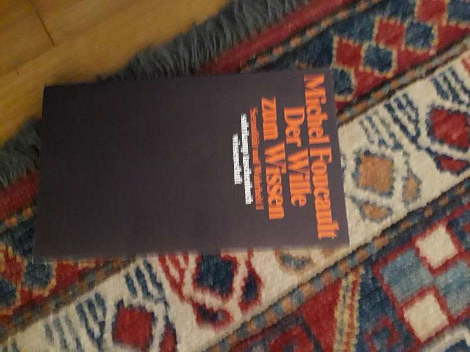
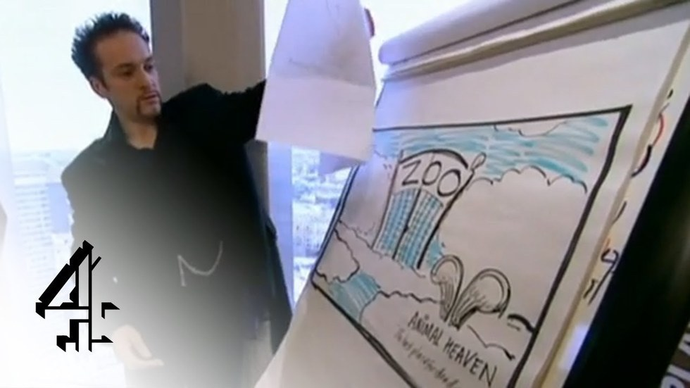

Nothing you will read in this thesis is new, but it is exactly what this is about. Individuality is the Blueprint of our culture. "Who am I?"
a question posed by many and since we have passed a time where living is purely focused on surviving, defining your own identity became one of
the most aggressive tasks of modern society. Through admitting this, I hope to start this thesis by being aware, that I myself try to differ,
to stand out, to do my own thing, autonomously developing my identity as a professional. But whose words are these? The environment I grew up
in formed my opinions, the structure I studied in my practice, everything that I create becomes real through several technologies and the
language I use which is legally considered as public property. Does the work I produce belong to everybody equally as it belongs to me? Who is
the author of my thoughts? Where do things come from and where can we take them to?
In the privileged moment of individualization ideas are our commodity. Although we do acknowledge that thoughts come from a more
complex constellation of things, we are easy in patronizing our own creative outcome. Every book has an author, every work an originator.
The power belongs to the original! By pointing out another creatives un-originality, the critic has become a vocal sword fighting against the
appropriation of the genuine. But who has the power to decide that one is less true than the other: All exists simultaneously.
It is a frequent habit when I discover several resemblances between two things to attribute to both equally, even on points in which they
are in reality different, that which I have recognized to be true of only one of them. Combined with this is another perversity, an innate preference
for the represented subject over the real one. (Oliver Laric, 2010) The real one is the first time we see, yet taking twin siblings who look identical
but are born seconds apart, one is not less true than the other. Both seem to be equally original.
Originality itself implicates a singularity. What seems to matter the most for this thesis is that I disagree with the idea that an author is something
a single individual can play. An author function became something anyone can play; The user gets to be a producer and vice versa; Creation becomes
a collaborative act and the idea of one great man who owns a thought obsolete. Taking this position is already an antithesis to what art seems to be
seen as: the creation of an autonomous genius. With the freedom to write whatever they may please. (Walter Benjamin, 1934) Per definition,
autonomy is independence. But we are always dependent on someone or something else, the system, the environment, the sponsor or a client that might shape
how we work or who we become. Trying to achieve full autonomy seems to be a readymade fairytale, which already makes one of my intentions for writing this
thesis obsolete: I will not become an autonomous designer in the end. Influence is inevitable.
Since the author function has multiplied, so has the possibility to be influenced by each others ideas, cultures and opinions. Multiplication, mimicry and
appropriation, have become the petrol of culture and although we want to see it as something that is harming the artists autonomy, we will not be able to
avoid it anyhow. What we like, we share and the authority of an author in times of posts and reposts has become very void. Published is for the public!
It is the action of the thinking power called an idea, which an individual may exclusively possess as long as he keeps it to himself; (Thomas Jefferson)
Today, almost anyone is an artist. (Hito Steyerl) In the 21st century knowledge is shaped by a bigger community than just the experts of their fields. Design became
everyday life, something anybody can do and does. The tools to create have been made accessible to the masses and along this accessibility comes a demand for an
active reader role to participate! Produce! Publish or Perish! But the intentionally positive evolution of Open Source (et al.) programs also includes a threat for
the conventional creative. If anybody can do what the professional creative claimed to do, what is the role of the designer in the contemporary society today? How
does crowd creativity interact with original material? How can we restrict the amateur authors from editing open accessible online platforms like Wikipedia in a
dilettantish manner? And who owns creative outcome in times of Deep Learning and Artificial Intelligence? The program, the human, the entire human species? Does the
rise of the creative lead to the fall of the creative by the age of 33 years like Ikarus who flew too close to the sun?
The following text is structured in little episodes, where I find ideas in different executions, sometimes similar but forever coexisting – a personal selection.
Within the episodes I am going to explain theories of creativity and authorship, the hypothesis of Multiple Invention and briefly introduce Design Learning,
Design Thinking and Why the Thrive for Originality can be Contagious – If not toxic. The chapters are structured that I recklessly stole from Michel Foucault.
A Who is the real author?
B What has he revealed of his most profound self in his language?
C Have we prove for its authenticity?
D How is it circulated, who controls it?
E What‘s the matter who‘s speaking?
(1) Who is the real author?
Who is the real author?
"You walked into the wrong establishment Bro";;; Cultural Appropriation
Who is the real author?
"You walked into the wrong establishment Bro";;; Cultural Appropriation
An image of an older man wearing multiple layers of clothes can be found in a photo series of Erwin Wurm’s Wear me out. In 2018 Balenciaga debuted an Uber-parka,
which essentially is seven coats sewn together. And without knowing either Wurm’s series nor having seen Balenciaga’s new coat, very recently I filmed a short
scene suggesting to turn off the heater and wear a lot of sweaters instead. Although none of these projects are related with each other, they contain the same
visual idea. When we compare them to each other, it is hard to unsee what seems to be obvious: One has been influenced by the other, but is this necessarily the
case? The hoodie itself was once owned as a wardrobe for the criminal class, popularized in the 1930s. As a practical solution for workmen it soon became a
convenient proxy for social profiling, a symbol of racism, fear and inequality. Because of wearing a hoodie, a kid has still been shot in 2012 by a police officer
who has indicated a threat. The hoodie is now, arguably, western fashion’s last truly political garment that depending on the gender, geography, age, conduct and
ethnicity of the wearer, can be either seen as a threat or a sign of juvenile resistance. "Who wears the right to wear one without any challenges?" (The New York
Times, 2018) White-washed by the western society, multilayered and shipped for the $9,000. (1) Where do we come from, how far are we going?
Who wore it better?
(1) Het Nieuwe Instituut: 2018, The Hoodie
Slaves Of The Template
The origin of Queen Elizabeth has been altered in the 4th issue of Benetton-sponsored Color magazine Race by Tibor Kalman in 1993.
The black Queen has been published in a photo-series alongside of other prominent people from a black version of
Arnold Schwarzenegger, to Pope John Paul II as Asian, Spike Lee as white and
Michael Jackson with a Nordic cast. The series "What if…" brings the notion of confusing color with race to imply how society subconsciously
classifies people by the color of their skin. Foremost the black version of Queen Elizabeth was been hugely discussed with a comment
of the Buckingham palace stating they discourage companies and organizations from using images of the royal family in any promotional
context. In 2015, 22 years after the race issue was published, the same image was apparently censored by the New Zealand government
to appear in a new book. Instead of this image, there is a tagline in the saying: There was an image of Queen Elizabeth with black
skin. The original image is still floating around on Pinterest and even appears to be a reason for some occasional the Queen is actually
black conspiracy-theories. (2) In theory, there are many variations that exactly look like you. Some geneticists believe that everybody
on Earth is at least 50th cousin to everybody else, which is likely because we all belong to the same gene pool - no matter which ethnicity
group we are in. (3) The online-project Twin Strangers is a platform that promises
to find your doppelgänger anywhere on the planet. When uploading a picture the software compares your facial features to a million of
other faces in the database. Canadian photographer Francois Brunelle seems to look out for the same visual result. Since 2000 he is driven
to capture non-related strangers with similar facial looks. Again, similar, to the intentions of Dutch photographer Ari Versus and profiler
Ellie Uyttenbroeks project called “Exactitudes“ (4) that originated in 1994. Instead of focusing only on facial similarities, Exactitudes
classifies people according to particular characteristics of their appearances and attitudes. It also functions as an anthropological
study of every social group and subculture with titles like Young Executives, Muslimas or Elders. What is interesting in Ari Versus series
is how different we all try to be, but still end up appropriating our physical appearance according to our environment, our jobs, age,
interests or religious backgrounds. Brad Pitt is likely to adapt his style to his current girlfriend and the curatorial project Tempmate,
a collection initiated by a group of graphic design students is mocking creatives searching for individuality unintendedly ending up all
looking the same. Benetton’s current commercials do not even attempt to stand out anymore. Now everything is brightly colored, carefully
constructed, very expensive and exclusive. Just like any other high-end clothing boutique.
Slaves Of The Template
"You walked into the wrong establishment Bro";;; Cultural Appropriation
Slaves Of The Template
"You walked into the wrong establishment Bro";;; Cultural Appropriation
(B) Slaves Of The Template
(2) Porter, Mark: 1999, Tibor Kalman: Bold images that blurred design, journalism, art and politics
(3) Try it out: https://twinstrangers.net/
(4) Visit: https://www.instagram.com/tempmate/
Design Learning, etc.
The first vocal imitation usually marks a major milestone in a toddlers life. Whereas animals are focusing more on
learning about the target (How to get food) human children mimic everything they see. Researchers have also found that
we unconsciously mimic other people’s facial expressions to feel what they feel (emotional mimicry) and that mimicking
movements or postures have shown to have a beneficial effect on people’s perception of you.(5)
The perception of a human hunting has also been the first art work which can be dated back to the Stone Henge and the
caves of Lascaux. It that sense the Stone Henge Artist also tried to mimic the first thing that seemed to be his natural
environment – a man, maybe himself, hunting animals with a spear. Early (supposed to be) female Stone Henge Artists
formed their own body as a fertility figurine which we now collectively call a Venus. The most popular Venus version
is the Venus von Willendorf (Austria, 1908), which has not been the oldest or first Venus found but gained its iconic
status through several appropriations in art and design. 300.000 years after its formation it still gets reproduced
in the form of a trophy for the award ceremony of the Creative Club in Austria, which annually awards advertising,
not art. In 2018 Facebook censored an image of the little statue for being pornographic, as the responsible ones have
not recognized it as a prehistoric, and therefore obviously not pornographic, piece of art. (6) What is also interesting
about the same little figure is when it comes to the art works description several archives name the author as being
"homo sapiens sapiens" which basically would mean is has been made by the entire human race.
(C) Design Learning, etc.
(5) Scutti, Susan: 2016, We Unconsciously Mimic Other People’s Facial Expressions To Feel What They Feel
(6) Der Standard: 2018, „Pornografie“: Facebook sperrt wiederholt Foto der Venus von Willendorf
Who Teaches the Teacher?
When artists mimic their environment, they also mimic their own practice. Through mimicking, we learn. Variations,
and sketches of existing art works put into question which version is considered the original, the final, or
just a sketch. Edvard Munch produced fours versions of The
Scream. The first Scream from 1893 is the most known. The second one from 1895 was probably commissioned. The 1910
version is believe to be a replica after selling the 1893 painting and the 4th version is eventually also dated back
to 1893 and could be the actual first version, but is considered less valuable or iconic by art historians than the
more familiar one we know now. (7) Copying his own practice was in a way a study to refine and perfection. An
indication of self-copy can also be found at another great classic „The Kiss“ by Gustav Klimt which is exposed in
the Museum of Applied Arts in Vienna. By stepping close enough to the painting, a pencil drawn grid becomes visible
underneath layers of paint. This grid implicates that Klimt used a small reference image, drew a grid over the reference,
then drew a grid to the same ratio over the large surface and then copied each square at a time until the entire image
was transferred. This indicates that the original artwork was probably comparably way smaller than the original large
version we know now. The revelation of an artist and his tools does not try to minder the quality of his production but
puts in question if the genius status liked to connect to an artist is justified when creation is hugely based on practice
and can therefore be taught like any other service. In the ancient Greek the artist had a little social standing, whereas,
very fast forward in the history of art, the artist in the Renaissance was treated like a god and the time of iconoclasm
marks a period where art has been declared to have a magical maleficent power which led to frequent image destruction by
the church for religious or political reasons.
Who Teaches the Teacher?
(7) Fox, Martin: 2018, Where is Edvard Munch‘s painting, The Scream? Why are there four versions?
(2) Whas has he rebealed of his most
profound self in his language?
The Author God
When artists mimic their environment, they also mimic their own practice. Through mimicking,
we learn. Variations, and sketches of existing art works put into question which version
is considered the original, the final, or just a sketch.
Edvard Munch produced fours versions of The Scream. The first Scream from 1893 is the most known.
The second one from 1895 was probably commissioned. The 1910 version is believe to be a replica
after selling the 1893 painting and the 4th version is eventually also dated back to 1893 and
could be the actual first version, but is considered less valuable or iconic by art historians
than the more familiar one we know now. (7) Copying his own practice was in a way a study to refine
and perfection. An indication of self-copy can also be found at another great classic „The Kiss“ by
Gustav Klimt which is exposed in the Museum of Applied Arts in Vienna. By stepping close enough to
the painting, a pencil drawn grid becomes visible underneath layers of paint. This grid implicates
that Klimt used a small reference image, drew a grid over the reference, then drew a grid to the same
ratio over the large surface and then copied each square at a time until the entire image was transferred.
This indicates that the original artwork was probably comparably way smaller than the original large
version we know now. The revelation of an artist and his tools does not try to minder the quality of
his production but puts in question if the genius status liked to connect to an artist is justified when
creation is hugely based on practice and can therefore be taught like any other service. In the ancient
Greek the artist had a little social standing, whereas, very fast forward in the history of art, the artist
in the Renaissance was treated like a god and the time of iconoclasm marks a period where art has been
declared to have a magical maleficent power which led to frequent image destruction by the church for
religious or political reasons.
The Author God
(13) Schwartz, Zachary: 2015, Wikipedia’s Co-Founder Is Wikipedia‘s Most Outspoken Critic
(14) Rosenzweig, Roy: 2006, Can History Be Open Source? Wikipedia And The Future Of The Past
(15) Bratton, Benjamin: New Perspectives
Radical Openness
Creation becomes a collaborative process. Tutorials, How To Videos and FAQs on Quora, Reddit, StackFlow and co. make up a large amount
of accessible information through which we learn, adapt and improve our own abilities and they usually come at anytime for free. The largest
online encyclopedia is created by over 10 million authors collectively, which is a huge step towards a more democratic educational system
that shares knowledge with anyone from anywhere. Yet editable pages like Wikipedia face another unfavorable side effect for having a lack
of authority when it comes to reliability and trust. Critics say that because the service is openly editable its information is populated
by volunteer vandals with poison-pen intellects. Several incidents also report political battles over companies and fraud by purposely
manipulating valid information. In 2015, Wikipedia co-founder Larry Sanger told in an interview that Wikipedia never solved the problem
of how to organize itself in a way that didn‘t lead to mob rule and that since he left the project, People that (…) are trolls sort of
took over. (13) (14) A lack of a clear authority led to a playground of editors that might seriously alter history, by simply click an
edit button and save without any responsibilities attached.
The good intentions of Wikipedia are similar to the ones of TED, who is trying to openly publish “Ideas Worth Spreading”.
Despite the free accessibility critics of TED speak out against elitism as well as calling out the non-profit organization to
charge its attendees $6,000 but cannot afford anything to pay for its speakers. In 2013 Benjamin Bratton took the stage to speak
out against the multinational medium– in form of the medium itself: “(…) But have you ever wondered why so little of the bright
futures promised in TED talks actually come true? Is something wrong with the ideas? Or with the notion of what ideas can do all
by themselves? (…) the conceptualization of possibilities is something that I take very seriously. And it’s for that reason that I,
and a lot of people, think that it’s time that we take a step back and ask some serious questions about the intellectual viability
of things like TED. And so, my TED talk is not about my work, my new book, the usual spiel, it’s about TED — what it is, and why it
doesn’t work. The first reason is over-simplification. Now, to be clear, I have nothing against the idea of interesting people who
do smart things explaining their work in a way that everyone can understand. But TED goes way beyond that. Let me tell you a story.
I was recently at a presentation that a friend of mine, astrophysicist, was making to a potential donor. And I thought his talk was
lucid, (…) but at the end of the day, I know nothing about astrophysics.“ (15) A question that might be more valid in connection
to Wikipedia than the medium of Ted would be: Should somebody who is not an expert even have the right to talk about something he
clearly does not know enough about? Do we really want to democratically the amateur to have the power to decide?
(13) Schwartz, Zachary: 2015, Wikipedia’s Co-Founder Is Wikipedia‘s Most Outspoken Critic
(14) Rosenzweig, Roy: 2006, Can History Be Open Source? Wikipedia And The Future Of The Past
(15) Bratton, Benjamin: New Perspectives
(F) Radical Openness
(13) Schwartz, Zachary: 2015, Wikipedia’s Co-Founder Is Wikipedia‘s Most Outspoken Critic
(14) Rosenzweig, Roy: 2006, Can History Be Open Source? Wikipedia And The Future Of The Past
(15) Bratton, Benjamin: New Perspectives
The Rise of the Amateur
The creative industry has in the last years been increasingly shaped by people who are not experts in things,
but contribute equally to cultural production. The rise of the amateur marks a time where it is possible for
an amateur to participate, create and publish which also might lead to an initial threat for the creative.
For the dilettante, (…) this game is exactly right. He’s a textbook example of a generalist, a user accustomed
to thinking in oppositions, who knows how to help himself and is not afraid of failure because he has nothing
to lose. (Manuel Bürger, 2013) Despite the conventional artist, an amateur is foremost working for himself
and might enjoy the biggest amount of autonomy in the creative industry as he independently operates just
for his own enjoyment. As a professional, it became also very easy to accuse him of appropriating the real
arts. An incident of 2015 proved such an accusation wrong when the hobby-photographer Sarah Scurr had handed
in an image of an iceberg she had captured back in 2006 to a weekly column competition by The Telegraph. 6 years
after the image got published a Chilean journalist and photographer named Marisol Ortiz Elfeldt went public
to accuse Scurr of lifting, editing, and submitting her photo to the contest. Scurr was publicly attacked for
her lack of artist ethics but insisted on not having stolen the image. The Telegraph started to investigate
both images and noticed that there was a slight difference in perspective between the two shots, both images
have been taken on the same day – November 6th – roughly from the same vantage point and just seconds apart.
(16) In theory, every picture has already been taken. There is nothing new under the sun. (Ecclesiastes 1:9)
(G) The Rise of the Amateur
(16) Smith, Oliver: 2015, How an incredible
coincidence sparked a Facebook plagiarism row
Who owns the idea?
The “I Amsterdam” city landmark is estimated to be photographed over 6,000 times a day, making it perhaps the most photographed
logo in the world. When the city council invited five agencies to participate in a pitch to redesign their city identity in 2004,
three out of five participating agencies presented the very same idea of “I Amsterdam”, independently. By that time one of the
three agencies, KesselsKramer, had already legally bought the branding name as a Web Space, which left no other option for the
council than choosing KesselsKramer over the other two agencies. Although an idea cannot be bought, Domains can. (17) A physical
“I Amsterdam” logo quickly became an example of the city’s (mass) tourism because of its successful campaign and the amount of
tourists doubled from four to eight million. 14 years after the pitch the city of Amsterdam decided to remove some “I Amsterdam”
memorials, as many Amsterdammers speak out about how their city suffers from its popularity inhabitable for its citizens.
Ironically there have been multiple cities that shamelessly copied the idea and translated the “I Amsterdam” to “I am Barawa”
in Barawa), “Only Lyon” in Lyon, “We Ramallah” in Ramallah or “WowMoscow” in Moscow; (18)
How is it possible to come up with the same creative idea without being influences by each other but by simply drawing the same
conclusions? The hypothesis of Multiple Invention is a theory that opposes the traditional view of a “heroic theory”, seeing
inventions as something multiple people discover independently. Oxygen has been invented in the 18th century simultaneously
by Carl Wilhelm Sheele, Joseph Priestley and Antoine Lavoisier and the theory of evolution of species has been independently
advanced in the 19th century by Charles Darwin and Alfred Russel Wallace. The theory of Multiple Invention also implicates,
that new concepts arise through the crossing of pre-existing concepts and facts. When two scientists independently make the
same discovery, their papers are not word-for-word identical, but the core ideas in the papers are the same, comparable to
the coincidental sameness of a creative concept. When the time is ripe for certain things, these things appear in different
places. (19)
An opposing theory to the hypothesis of Multiple Invention is the “Great Man Theory”, established in the 19th by Thomas Carlyle.
He (!) put forth the idea that the world’s history is nothing more than a collection of biographies belonging to great man and
that great leaders are born, not made. The famous sociologist Herbert Spencer, strongly disagreed with this concept already at
the time it was published and argued, that great leaders are only products of their environment. Before a “great man” can
remake his society, a society has to make him. (20)
(H) Who owns the idea?
(17) Kessels, Erik: 2017,
Fabulous Failures, Die Angewandte Wien
(18) Pater, Ruben with Veerman, Yuri: 2018,
Who Owns The City
(19) Stuart jr., Dave: 2016, Stop Obsessing Over
Uniqueness: How Multiple Discovery Theory
Makes Us Better and Saner
(20) Carlyle, Thomas: 1840s,
“The Great Man Theory“
(3) Have we prove for its authenticity?
The Authority of the White Male Artist
An art installation looping for 24-hours featuring clocks and timepieces from 70 years of cinematographic
history synchronized with the actual time: “The Clock” by Christian Marclay is currently exhibited at the Tate
Modern in London. When an assistant of Marclay brought him footage of different clocks, he wondered if it was
possible to find every single minute of the day. He kept this idea a secret for several years, concerned that
someone would do it first. The Clock took 3 years to compile and consists exclusively of footage that he did
not film himself and neither he got the copyright clearances for any of the films used. When Marclay started
to make the piece, he did not expect that copyright would be a substantial obstacle theorizing that if you
make something good and original and not ridiculous or offensive the creators of the original material will like it.
The Guardian called it a masterpiece of our times and five of the the six existing editions of The Clock were sold
for US$467,500 each with the restriction that the clock cannot be played in more than one location at the same time
and with a mandatory projection on a 6,5m x 3.7m screen in a room full with white IKEA couches. In order to ensure
that the full video would be exhibited, he also requires that museums agree to be open for 24 hours at some point
during its run. (21) (22) Although Marclay technically owns none of the footage-pieces, he earned more than 6
millions Dollars with an idea and a dedication. Email Correspondence with Univ.-Lekt.Dipl. Phys. Dr. phil. M.A. Tobias Fox Lecture:
intellectual property rights of creatives (Univ. f. Applied Arts Vienna)
Fox: "The Clock can be compared to a collage, a new image composed of parts of familiar snippets.
The legal question for the authors of the snippets would now be whether a snippet part is iconic
enough by itself and has a sufficient work height and what contribution the snippet has to the new
artwork. To argue correctly on this it requires a deeper illumination of the case; a snippet post itself
is too small to be a facie. (…) The special artistic value of „The Clock“ is something, most snippets do not focus on,
namely the time in the movie as such. “The Clock“ is, so to speak, the whole thing that is more than the sum of
its parts."
If all Christian Marclay owns is the idea, but an ideas itself is nothing that can be exclusively owned, how can
Christian Marclay be considered as the author of “The Clock”?
Fox: "At the beginning of "The Clock" there was the pure idea. She is fleeting, can be forgotten, someone else can
come up with it. She is indeed unprotected. The moment the film collage arises, a work of copyright arises.
The author function remains with Crisian Marclay, it is his intellectual property. This is a big step, if not
the end of the story, because now copyright works, on the one hand a pure idea to something which may be property,
but on the other hand, the question of intellectual poperty: Where does the protection end? Which works are dissimilar,
which are similar etc."
(I) The Authority of the White Male Artist
(21) Bradshaw, Peter: 2018, ‚It‘s impossible!‘ – Christian Marclay and the 24-hour clock made of movie clips
(22) The Tate Modern, 2018
The Authority of the Audience
To protect her intellectual property Madonna and her label tried to combat illegal trading of songs of her
American Life album in 2013. Anybody who would try to download a copy of the singer’s new work would instead
get a voice recording of her cursing: What the fuck do you think you are doing? Only days after her website
was already hacked, her songs leaked and the internet community came back at her publishing a remix of her curse.
According to The Smoking Gun the hacker even defaced the singer’s homepage shortly after with the words: This
is what the fuck I think I’m doing. (23) What was supposed to be powerful act against piracy by the producer
quickly got overpowered by the user instead. The mashup is a term that describes a creative work, usually in
the form of a song, which is created by blending two or more pre-recorded songs by overlaying the vocal track of
one song seamlessly over the instrumental track of another. Legally a Mashup needs to cover all copyrights of
pre-existing music which is practically not always the case. Is it still illegal to download music? Yes and no.
According to copyright law, distributing copyrighted work such as a music file is against the law. Some music
files that are copyrighted are still distributed by the artists themselves which breaks down what illegal and
legal would be considered as.
In 2008 the Iranian Revolutionary Guard posted an image of four missiles heading skyward. The photo was used on
the front pages of many major newspapers and Web Sites when 3 days later an alternative, almost identical version
of the image was distributed but with three missiles instead of four. One of the missiles appears to be the sum
of two other missiles in the image, both contours of the billowing smoke match perfectly the ground. Does Iran’s
state media use Photoshop? (24) According to France-Presse, the image has been digitally altered to cover a
grounded missile that may have failed during the test. After the incident was made public, several news sites
disowned the image. The incident led to anonymous authors and trolls all over the world playing through numerous
possibilities of the imagery’s potency. When Googling this missile incident, different versions of the image appear
coexisting next to the three and four missile version. Authenticity is decided on by the viewer. The more often an
image is viewed, the more likely it makes the top of search results. An image viewed often enough becomes part of
collective memory. (Oliver Laric, Versions 2009) The authenticity of information has become a problem with world
impact. – “Alternative” truths are a product of what we want to know is true without always questioning if it actually is.
Quite appropriately Hellon Lupton alters a phrase by Alexander Pope a little knowledge can be dangerous to A little
Photoshop can be dangerous. (25) Although the means of journalism are very clear: Say by what you know for sure, what is. (26)
(J) The Authority of the Audience
(23) von Gehlen, Dirk: 2011, Mashup, Lob der Kopie
(24) Nizza, Mike and Lyons J., Patrick: „In an Iranian Image, a Missile Too Many“
(25) Lupton, Helen: 2011, Participate - Designing with user-generated content
(26) Böhmerman, Jan: 2018, the rhinozerus in the room
(4) How is it circulated, who controls it?
The Rhinozerus In The Room
In a crisis time of fact based journalism, the Case Claas has caused another great debate fighting right-wing
accusations of media fraud. Claas Relotius, who functioned as a writer at Der Spiegel, Welt, Die Zeit and other
prestigious German newspapers admitted at in December 2018 to have falsified several articles on a grand scale including
people he had not met or even invented and described scenes that never existed before. With the age of 33 Relotius had
received several awards from the CNN Journalist of the Year, the European Press Prize, the Deutscher Reporterpreis on four
occasions and even landed on Forbes Magazines List of 30 under 30. He was one of the most promising German writers who the
end of 2018, with the age of 33, handed back several rewards he has been given to over the recent years. Now journalist
and readers only award him with disgust, criticizing his ethics. He is like Ikarus that wanted to flow too close to the
sun and then eventually fell very very deep. Claas Relotius apparently had the feeling that we could not live up to our
expectations with good and very good stories. They had to be excellent. We never gave him that impression, but of course
we were proud of the tremendous response to his stories and the many prizes he has won. He was under pressure to repeat
his achievements and win the next prize. He evidently believed that he could do this only through forgeries. (official
Spiegel Statement) (27) (28) (29) In an official statement by Relotius he states, that It wasn’t about the next big thing.
It was the fear of failure. In an article written by Jan Böhmerman with the title The Rhinozerus in the Room he describes
how case Relotius can either be understood or condemned. Although nothing could solidify Relotius fraud there is something
more to the story than just a journalist that decided to change a story. Does a system that defines itself through creativity
prices, constantly forced to be better, faster, and more entertaining eventually supports falsifications because it does not
question reliability but awards the new born hero that internally can not live up to his own standards anymore? Does the rise
of the creative implement the fall of the creative by the age of 33 years like Ikarus who flew too close to the sun? (30)
A following up question would also be: how can we avoid future fraud when the human himself can not sort it out anymore, is
it time for more evolving technological control?
Slaves Of The Template
(K) The Rhinozerus In The Room
(27) Klusmann, Steffen and Kurbjuweit, Dirk: 2018, Der Fall Relotius –
Wir haben sehr viele Fragen
(28) Fichtner, Ullrich: 2018, Manipulation Durch Reporter, Spiegel legt Betrugsfall im eigenen Haus offen
(29) Kurzke, Hermannt: 2018, Verstehen, nicht verurteilen
(30) Assheuer, Thomas: 2018, Die Welt als
Reportage
Design = Crime
As creatives, we can only go as far as a program allows us to go. “Content-control” determines
what a user can access online although the idealistic idea of the internet was it being a non-territorial
space, power structures and restrictions clearly define what we are able to access or produce. With the
2003 version of Photoshop CS (8.0), Adobe even decided to restrict their users in the possible attempt of
committing a crime by using their environment. Although Photoshop appears to be the program where you can
drop and edit any image material, when trying to edit a bank note a message stating: This application does
not support the editing of banknote images. appears which does not only make the user aware that it is
forbidden to alter images of banknotes but also restricts the user in preceding with doing it. The power
does not belong to the creator, the power belongs to the environment the creator is operating in. While
restrictions legally vary from country to county in some countries any reproduction of banknotes, even for
artistic or advertising use, are strictly forbidden. (31)
(K) Design = Crime
(27) Klusmann, Steffen and Kurbjuweit, Dirk: 2018, Der Fall Relotius –
Wir haben sehr viele Fragen
(28) Fichtner, Ullrich: 2018, Manipulation Durch Reporter, Spiegel legt Betrugsfall im eigenen Haus offen
(29) Kurzke, Hermannt: 2018, Verstehen, nicht verurteilen
(30) Assheuer, Thomas: 2018, Die Welt als
Reportage
Predictability in Design and Art
In 2018 at the Cannes Lions Festival of Cannes which annually awards outstanding advertising work
Microsoft IPG presented a new program which will eventually take over the whole creative process
of daily design and branding business by an Artificial Intelligence. The program or network, how
they call it, has access to millions of stock footage and pre-constructed slogans and will be able
to generate custom-made campaigns for brands in a minimum of time. Although we think automation does
not apply to the art industry, or design – any technology that makes things better, faster, or
cheaper will eventually be desirable to become the standard. How to predict a creative outcome has
been illustrated in a social experiment with Derren Brown, a British mentalist. Brown invites two
leading creatives to come up with a poster idea for a fictive taxidermy company within half an hour,
making them aware that he will be able to predict their result. After presenting what they have come
up with it barely differs from Browns prediction noting that they would be impressed by how much
effort they had put into the experiment to make this happen: Several subliminal messages and triggers
carefully hidden as reoccurring shapes, certain words or printed on t-shirts of people passing by
right before the experiment. (32) Although Derren Brown faces many critics calling him a pseudo-psychologist
and foremost entertainer altering his results, generative creativity is not very far from the future
and decoding the creative process research that will eventually lead to a replacement of a creative
against a machine, like the industrial revolution 2.0.
When it comes to ownership an essential question to pose would be: Who owns the creative outcome
of such machines? The developer, the machine? Or the entire creative industry as the program only
learned to “produce” design by trying to encode humans and their way of thinking. How can we depict
an author if the author function becomes something non-human and what is Copyright in the age of deep
learning? (33) Since the program is still learning from the human, feeding a certain code can still
result in shaping a machine. A Google Image search for the word “germans”, for example, will get you
a photo of three Afro Americans as a top result. And a Google Image search for the word “idiot” will
get you a photo of Donald Trump. Humans do shape the program in the end, and if a program will take
over creativity it might only take over the service part of creativity, which does not ask for solving
deeper problems in design or art.
Predictability in Design and Art
Pseudo-Psychologist Derren Brown predicts the creative outcome of two leading experts who work as
Creative Directors in Advertising
(M) Predictability in Design and Art
(32) Brown, Derren: 2007, Subliminal Advertising with explanation „Animal Heaven“
(33) Schönberger, Daniel: 2018, Deep Copyright: Up - And Downstream Questions Related to
Artificial Intelligence (AI) and Machine Learning (ML)
Design Thinking, etc.
Many designers still use the term problem-solving as a non-defined description of their task. But what is the problem?
Is it scientific? Is it social? Is it aesthetic? Or is the problem in fact that there is no problem? (Daniel Van der Velden, 2006)
In 2005, the software billionaire Hasso Plattner, donated $35 million to create a school that educates Design Thinking. Design Thinking
is a term to describe a method of creative problem solving where we seek to understand the user and challenge common assumptions in attempt
to identify alternative strategies and solutions that might not be instantly apparent with our initial level of understanding. (34) But as
Daniel Van der Velden puts it in his essay Research and Destroy: Design only creates longing and the problem is the problem of luxury.
Critics of the idea of design thinking mainly argue that it became a useless buzzword that tries to package a designer’s way of working
for a non-design audience by codifying design processes into a step-by-step approach to creative problem-solving–claiming that it can be
applied by anyone to any problem. (35) In the essay written by Lee Vinsel, “Design is Kind of Like Syphilis” he questions how “great ideas”
are the new “secret” weapons for building a greater good and Pentagram partner Natasha Jen reduces design thinking to a single tool: the 3M
Post-It note, but “the Post-It mania” ignores the rich set of tools, methods, and processes that designers have. (36) Especially in a time
where the creative is faced with on the one hand amateurs who experiment in his field and machines who decipher his magic power of creating,
naming graphic design design thinking seems to be another way of emancipating against the mass and solidifying our own profession to still
exist. The word “creative” has become one of the most used buzzwords used on LinkedIn profiles several years in a row. But what does
creativity actually look like?
(M) Design Thinking, etc.
(34) Dam, Rikke and Siang, Teo: 2018,
What is Design Thinking and Why Is
It So Popular?
(35) Van der Velden, Daniel: 2006,
Research and Destroy
(36) Vinsel, Lee: 2017, Design Thinking
is Kind of Like Syphilis — It’s Contagious
and Rots Your Brains
(F) What’s the matter who’s speaking?
Inspirational Quotes Are Epidemic
The visual interpretation of an idea is usually an image or icon of a light bulb,
the term bright or clever seems to have originated in late 1700 and is said to
describe children who displayed a remarkable intelligence for their age. The metaphor
goes back to Thomas Edison, who invented the light bulb (as we know) but needles where
the idea to represent an idea with a light bulb comes from, it became part of our collective
brain and is not connected to any person who did it first, nor prominently related to
Edison and his invention. (37) In a letter by Thomas Jefferson to Isaac McPherson from
1813 he writes: It is the action of the thinking power called an idea, which an individual
may exclusively possess as long as he keeps it to himself; (Thomas Jefferson, 1813) But
what’s the matter who said it, someone said it. (38) And as soon as somebody did say it,
or in the case giving an idea the shape of a light bulb, it is in our practical nature to
reuse and reproduce until naming a originator becomes unreasonably.
Good ideas spread quickly and epidemically. The epidemic nature of a certain amount of
words that carry a thought are also found in inspirational quotes. A Carpe Diem can be found
several wall tattoos as well as actual tattoos without namely mentioning Horaz and the sentence
Live Laugh Love is represented on mugs, cushions and doctor office rooms already having seemingly
lost its originator. Websites like BrainyQuote and GoodReads specialize in collecting these salient
of affecting thoughts to get inspired by. According to the CreativeLive blog, the reason why we love
inspirational quotes is that they affirm what we already know (or think we know) about ourselves and on
a recent episode of the NPR show Invisibilia the quote is explained to be a powerful impulse that is written
into people…this urge to want to clearly differentiate themselves, to declare their category. And through the
repetitive nature of the inspirational quote, different variations evolve or original intentions get lost,
altered and appropriated to what want to see them as. The quote “Blood is thicker than water”, for example,
is one of the many Bible verses that have been mis-adapted for common use. The quote implicates that a family
bond is stronger than any other bond but the original quote says “The blood of the covenant is thicker than the
water of the womb.” which actually means that bloodshed in battle bonds soldiers stronger than simple genetics.
In the end the original quote does not refer to family at all. Popular female artists who appropriate salient
and affecting thoughts are Jenny Holzer, Barbara Kruger or recent Rijksacademie graduate Nora Turato. While Holzer
uses wisdoms or text bits from other pieces she collected and curates them in a way to make it her own, Nora Turatos
work is a performative act of narrating observations and ideas in a theatrical way, which can be seen as an
inspirational quote in an artistic sense, affirming what I know about myself. Again, by identifying ourselves
with other people thoughts we reflect on who we are or are trying to be. It therefore creates an interest, some
sort of self-reflection scaled down to some spoken words.
Predictability in Design and Art
“Blood is thicker than water” originated from the Bible and is commonly used to describe how the bond of a family
is thicker than any other
(O) Inspirational Quotes are Epidemic
(37) Reddit, @unrealized: 2016, TIL that the
light bulb is the universal symbol for a new idea
because of Felix the Cat cartoons.
(38) indirect quote of Samuel Beckett
(39) Schadmal, Peter: 2013, We Love inspirational Quotes
(40) Lang, Nico: 2013, 31 Famous Quotations You’ve Been Getting Wrong
10.000 Followers for Everyone!
The identity that we built online legitimates that we are real to such an extent the loss of materiality makes us feel we
have never actually lived. Kelly Chessin, who used to manage a suicide hotline in San Francisco now works as data crisis
counselor for a Novato company called DriveSavers, which recovers lost data from crashed computers. In an interview she
states: People get upset -- very, very upset. They yell. They cry. They need someone to listen to them and let them vent.
That‘s what I‘m here for.
In 2001 artist Michael Landy destroyed everything physical he owned as a performative act. During the course of two weeks,
Landy and his team of 12 assistants stripped, shredded, crushed and dismantled 7,227 items he had amassed over his 37 years.
It was the happiest two weeks of my life. (Michael Landy, 2001) (43) But Landy also noted, that at some moments, he felt
like witnessing his own death. Break Down was been performed publicly and criticizes Western society’s obsession with
stuff and ownership as well as posing a more existential question: who am I? Mark Farid, the author of the online-article
“I took myself offline completely. Here’s why” describes how he decided to get rid of his digital identity during a panel
discussion called „Data Shadow: Anonymity is our only right and that is why it must be destroyed”. Farid gave out all the
login details– from his Facebook account, Twitter, Gmail, Hotmail, AppleID– to the audience, who altered all passwords only
moments later. Farid described the following weeks the most isolated he had ever felt. There’s no having a smartphone on me
at all times, able to entertain and distract me at any moments pause. No laptop to stare at in the evenings. None of my favorite
music, all available at the click of a button. No Google Maps or Uber. No emails. Instead, I can store 35 texts on my phone,
play Suduko (it doesn’t save). What we own is who we are and ownership has swifted from a physical to a virtual space.
Online appreciation, for example, is promoting our own existence. Even as an artist, a signature online presence becomes
more important than the individual work itself. In the end it is not who you know (which is principally a favour) but who
likes you that will increase your chances of making it big. …what the artist once accomplished by making commodities that
could stand independently from them is now accomplished through their ongoing self- commodification. This has reversed the
traditional recipe that you need to create art to have an audience. Today’s artist on the Internet needs an audience to create
art. (Brad Troemel, 2013) (44) To fight this dominant superficial attention culture, to take a step to equalize– internet
artist Constant Dullart bought 2.5 million Instagram followers and distributed amongst a personal selection of the art-world
active on Instagram, a niche of 30 ambitious art world accounts. Dullart was called the Lenin of social media, a reset of the
social capital.
(P) 10.000 Followers for Everyone
(42) Lazarus, David: Psychologist helps victims of data loss / Some soothing words after the data wreck
(43) Sooke, Alastair: 2016, The Man Who
Destroyed All His Belonging
(44) Troemel, Brad: 2013, Athletic Aesthetics